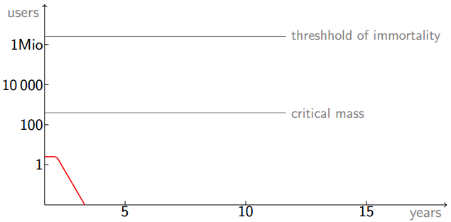

Frequently asked questions
Why another language?
In Simon Peyton Jones's taxonomy of programming language lifecycles, the projected future of Fry is the quick death:

So why bother?
Why dynamic types?
In reality, Fry is a functional language in disguise, and strong static type systems go well with functional languages. The reason why Fry is not strongly-typed is merely its under-development. This means that Fry will probably become strongly-typed at some point in the future.
Why the name?
Fry is a character in the TV show Futurama, who happens to be his own grandson (en.wikipedia.org/wiki/Roswell_That_Ends_Well). It reflects the concept of circular inheritance, which is a distinctive feature of Fry.